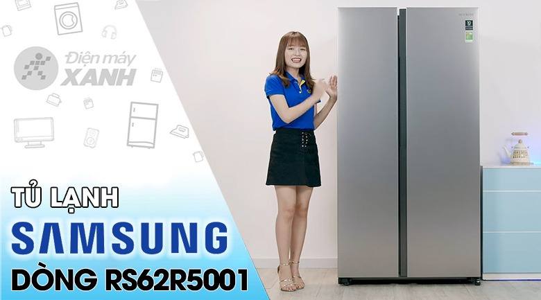
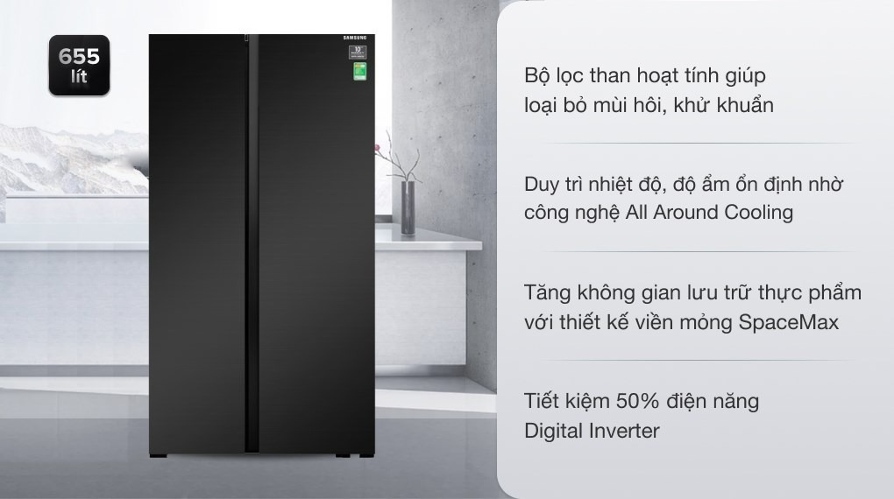

|

 |
Giá tiền: 23.990.000₫
Khuyến mãi
Thông tin sản phẩmThiết kế Side by Side đẳng cấp cùng gam màu đen thời thượngTủ lạnh Samsung Inverter 655 lít RS62R5001B4/SV là một chiếc tủ lạnh mang gam màu đen đẳng cấp, thời thượng. Đi cùng kiểu dáng tủ lạnh side by Side 2 cửa mở rộng sang trọng, tủ lạnh không chỉ là điểm nhấn cho không gian nội thất mà nó còn giúp bạn thuận tiện trong việc quan sát, tìm kiếm và sắp xếp thực phẩm. Lưu ý: Khi mua tủ lạnh Samsung Inverter 655 lít RS62R5001B4/SV từ ngày 01/11/2022 sẽ được bảo hành động cơ máy nén 20 năm. Các sản phẩm mua trước ngày 01/11/2022 đều được bảo hành động cơ máy nén 10 năm.Dung tích 655 lít phù hợp cho gia đình trên 5 ngườiNếu gia đình bạn có trên 5 thành viên hoặc bạn hay người thân có thói quen mua nhiều thực phẩm về dùng dần thì chiếc tủ lạnh Samsung Side by Side với dùng tích 655 lít này sẽ là một sự lựa chọn đáng cân nhắc.
Công Nghệ Digital Inverter tiết kiệm điện năng hiệu quảVới công nghệ Digital Inverter, tủ lạnh Samsung RS62R5001B4/SV không chỉ mang đến khả năng tiết kiệm điện hiệu quả mà nó còn giúp duy trì nhiệt độ được ổn định, vận hành êm ái, bền bỉ, không gây ra tiếng động ồn ào khó chịu.
|